Rendere la lotta svizzera una realtà ticinese entro il 2030.
Vogliamo consolidare la presenza della lotta svizzera nella realtà sportiva e culturale del Ticino, rendendola riconosciuta, accessibile e tramandata alle future generazioni.
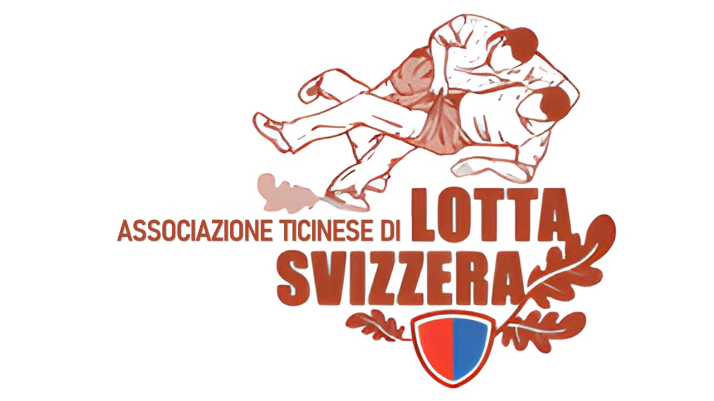
Concetto Partner ATLSConcetto Partner
Una proposta per aziende e partner che vogliono accompagnare la crescita della lotta svizzera in Ticino: giovani, territorio, eventi, diffusione e un nuovo locale alla CMFG Arena.
Associazione
L'ATLS è l'associazione che rappresenta la lotta svizzera nel Canton Ticino. È membro dell'Associazione di lotta svizzera della Svizzera centrale (ISV) e dell'Associazione federale di lotta svizzera (ESV).
Lo scopo dell'ATLS è la cura, la promozione e la diffusione della lotta svizzera, contribuendo così a conservare gli usi e costumi popolari della Svizzera e del Ticino.
Vogliamo consolidare la presenza della lotta svizzera nella realtà sportiva e culturale del Ticino, rendendola riconosciuta, accessibile e tramandata alle future generazioni.
Attraverso allenamenti, formazione, eventi e un'attività di diffusione professionale, rendiamo la lotta svizzera sempre più accessibile e presente in tutto il Ticino.
Valori che guidano il nostro sport: fedeltà alle radici svizzere, lealtà nella segatura e collaborazione fuori dal campo. Avversari durante la lotta, ma parte della stessa grande famiglia in tutta la Svizzera.
La nostra storia
Una linea del tempo essenziale: prima il futuro che vogliamo costruire, poi i passaggi che hanno reso possibile arrivare fin qui.
La nuova fase ATLS unisce infrastruttura, cultura, eventi e giovani in un progetto comune.
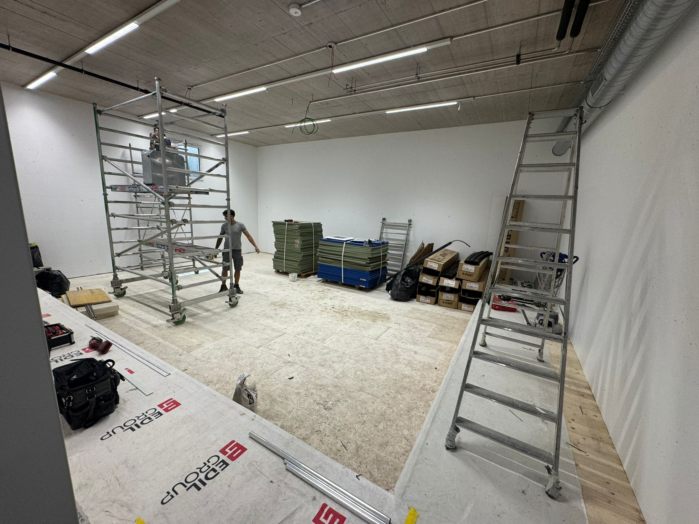
Cadenazzo 2022 apre una nuova fase. Biasca 2025 conferma la crescita con circa 5000 spettatori, 200 lottatori e 8 ore di diretta RSI.
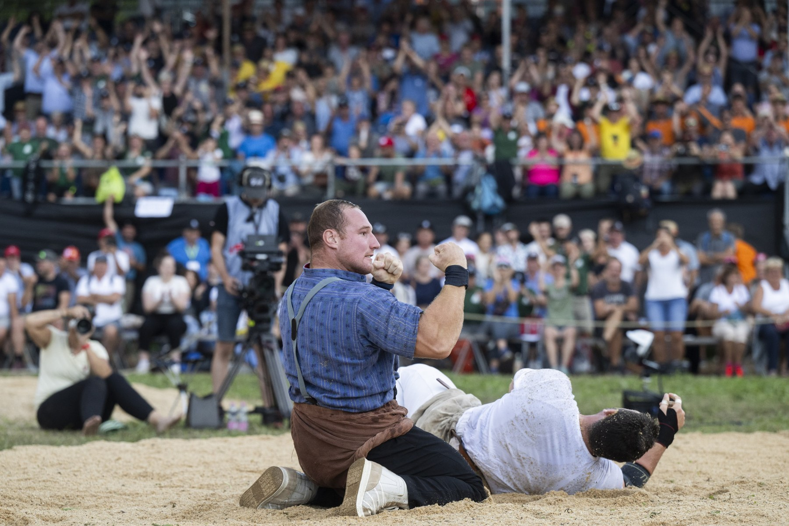
Il 13 agosto nasce ufficialmente l'Associazione Ticinese Lotta Svizzera. Edi Ritter viene nominato primo presidente.
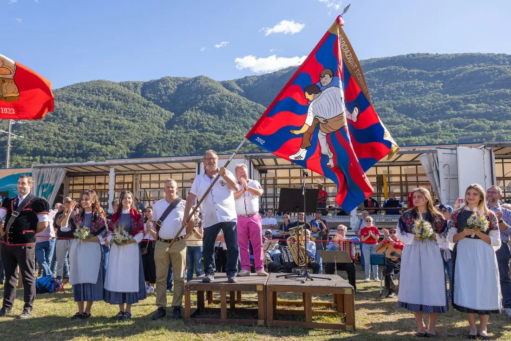
Le prime lezioni a Sportissima accendono l'interesse. In inverno si lavora in piccoli garage non riscaldati: condizioni semplici, ma tanta volontà.
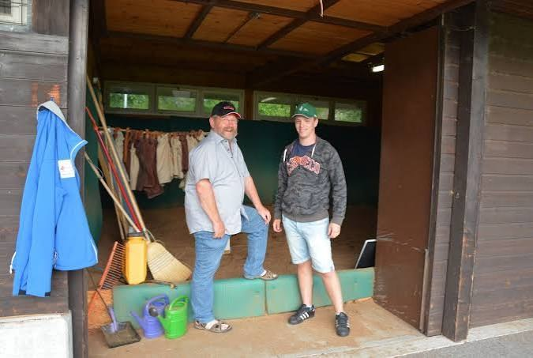
Nel 2025 ATLS organizza la seconda Festa Cantonale a Biasca, confermando la crescita del movimento e la sua importanza nel panorama della lotta svizzera in Ticino.
Custodi di una tradizione viva. Lo sguardo al futuro.
Cosa faremo
La nuova palestra di Sigirino è il punto di partenza. Da qui vogliamo costruire un settore giovanile stabile, raccontare la cultura della lotta svizzera in Ticino e organizzare nuovi grandi appuntamenti.
I quattro pilastri per il futuro
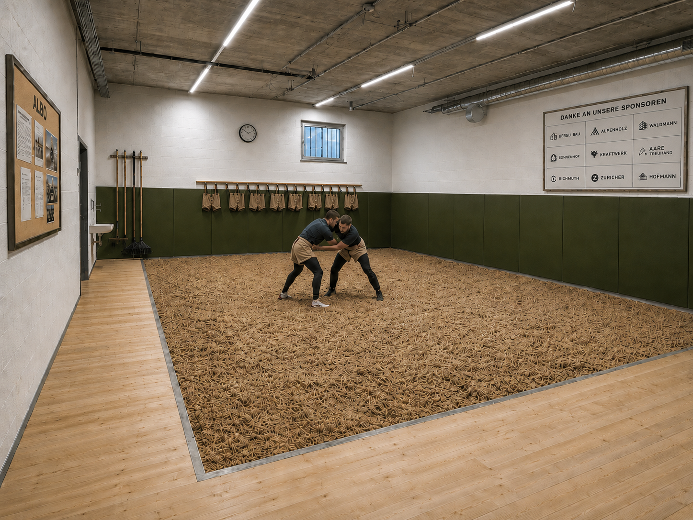
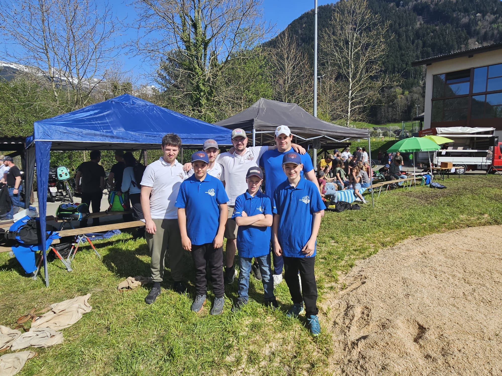
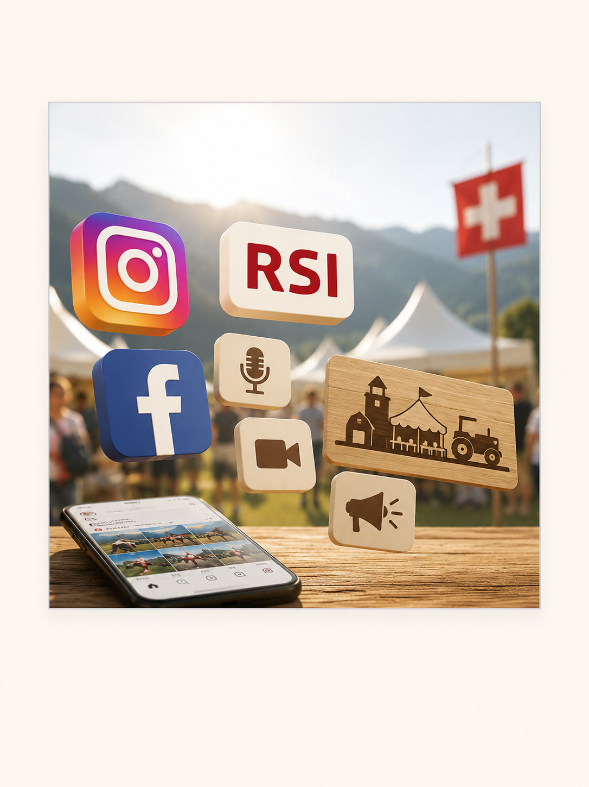
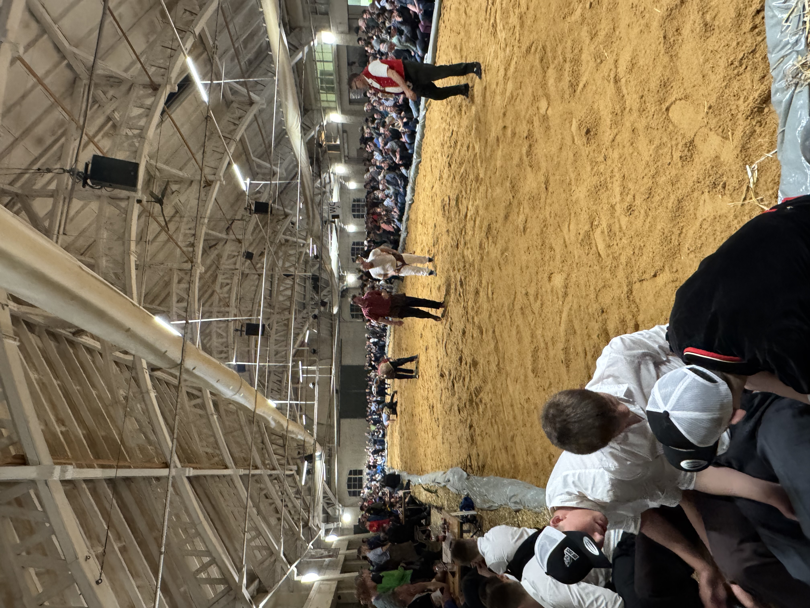
Le persone in missione
ATLS vive grazie a persone che lavorano, si allenano, partecipano e ci sostengono.
Competenze sportive, amministrative e professionali al servizio di ATLS.
Dieci attivi e tre giovani tesserati nel 2026.
La rete associativa che sostiene il movimento e crea un ambiente familiare.
Aziende e sostenitori che investono nel territorio e nel futuro del nostro sport nazionale.
Scopri chi guida ATLS, chi scende in campo e come la rete dei membri rende possibile il progetto.
La nuova base di Sigirino, un gruppo giovane e un'associazione piena di energia creano una finestra unica. Chi entra oggi non accompagna un progetto già concluso: contribuisce a costruirne le fondamenta e a rendere la lotta svizzera una presenza definitiva nel Cantone.
Scopri come sostenerci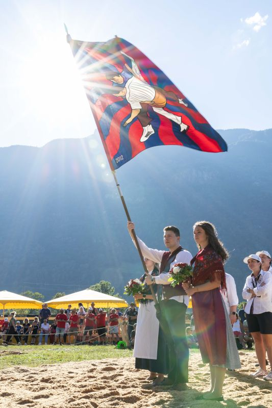
Nuovo progetto
Il prossimo salto di qualita e il nuovo locale di lotta alla CMFG Arena. Non solo un campo di segatura, ma un luogo riconoscibile per allenamenti regolari, presentazioni sponsor, corsi aziendali, dimostrazioni, contenuti social e incontri con la comunita.
La CMFG Arena e perfetta per lo sviluppo della lotta svizzera perche e un centro polisportivo moderno, con palestra, ristorazione, sale per eventi e riunioni, parcheggi e spazi pensati per sport, formazione e socialita. Per uno sport ancora giovane in Ticino, avere una casa chiara significa rendere piu semplice invitare ragazzi, famiglie, aziende, media e partner.
Continuita per attivi e giovani, con spazio dedicato e identita ATLS visibile.
Esperienze di team building e introduzioni alla lotta svizzera per partner e collaboratori.
Contenuti foto/video, menzioni sponsor e storytelling piu costante durante l'anno.
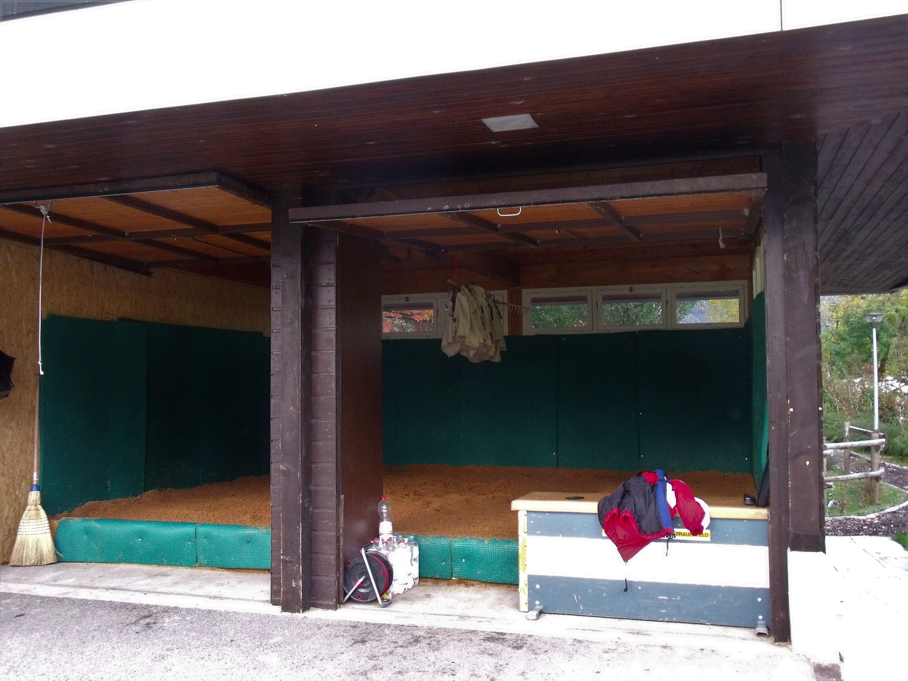
Dove siamo
Il segnaposto rende immediata la visita: un partner capisce subito dove nasce il progetto, dove si potranno organizzare incontri e dove sara visibile il suo sostegno.
Associazione in numeri
Dati indicativi da rapporto annuale e materiali ATLS. I numeri possono essere aggiornati prima dell'invio ufficiale ai partner.
Comitato
Il comitato unisce esperienza sportiva, competenze associative e profili professionali diversi al servizio della crescita dell'ATLS.

Ex lottatore dell'ATLS, ha assunto la guida dell'associazione nel 2022. Rappresenta il Ticino nel comitato centrale dell'ISV ed è attivo anche come arbitro. Attualmente sta inoltre completando la formazione per diventare esperto G+S per la Svizzera centrale.
Nella vita professionale sta conseguendo un Master in economia presso l'Università di Zurigo.

Padre di un giovane lottatore e da anni vicino alla lotta svizzera, dal 2025 sostiene il giovane comitato ATLS portando la sua esperienza maturata in diverse associazioni sportive.
Professionalmente è responsabile della filiale PROBST MAVEG di Osogna ed è inoltre membro del comitato cantonale UPSA.

Membra del comitato di fondazione dell'ATLS nel 2012, ricopre sin dagli inizi il ruolo di segretaria e cassiera. È un importante punto di riferimento per i membri e per l'organizzazione amministrativa dell'associazione.
Professionalmente è impiegata di commercio qualificata.

Responsabile degli allenamenti, della partecipazione alle gare in tutta la Svizzera e rappresentante del Ticino nei comitati tecnici della Svizzera centrale. È tuttora attivo come lottatore.
Professionalmente è falegname qualificato e sta concludendo il Bachelor in ingegneria del legno.

Ex lottatore, oggi è portabandiera ufficiale dell'ATLS e membro del comitato. Contribuisce alla rappresentanza dell'associazione in occasione di eventi, feste e momenti ufficiali.
Ha conseguito una formazione in economia presso l'HSG ed è attualmente attivo nel private banking.

Responsabile dello sviluppo strategico e delle collaborazioni con partner del territorio. È lottatore attivo e gestisce anche una propria accademia di jujitsu.
Professionalmente guida un team nell'ambito dell'informatica bancaria.

Proposta sponsoring
Tre livelli di collaborazione per sostenere la crescita della lotta svizzera in Ticino.
Main Partner
CHF 5’000/ anno
Massima visibilità
Presenza principale su abbigliamento, comunicazione ed eventi ATLS.
3 spazi logo da 30 cm2 sui capi ufficiali ATLS ammessi dal regolamento ESV. Presenza stabile durante allenamenti, trasferte, eventi e momenti associativi.
1 spazio da 30 cm2 sul cappellino per un eventuale quarto partner, da coordinare prima della produzione.
Logo, link, descrizione azienda e posizione prioritaria nella pagina partner ATLS.
Post personalizzati per raccontare il partner, la collaborazione e il valore dato alla crescita della lotta svizzera in Ticino.
Menzioni durante allenamenti, gare, eventi, visite partner e contenuti dietro le quinte.
Logo su inviti, calendario, comunicazioni ufficiali, materiali sponsor e presentazioni istituzionali dove coerente.
Possibile presenza visiva nel nuovo locale di lotta, ad esempio parete partner, targa o pannello coordinato con l'identità ATLS.
Inviti e accessi a eventi selezionati, feste e momenti associativi, secondo disponibilità e regolamenti organizzativi.
Sponsor Partner
CHF 1’000–3’000/ anno
Visibilità continuativa
Collaborazione annuale con presenza su canali digitali e materiali ATLS.
Logo, link e breve descrizione nella pagina partner ATLS, con posizionamento distinto dai sostenitori.
Presenza su flyer, brochure digitali, documenti sponsor e materiali legati a giornate prova, corsi o presentazioni.
Ringraziamento sponsor nei resoconti gara e nelle comunicazioni dopo eventi importanti, con foto e menzione coordinata.
Menzioni IG/FB in occasione di allenamenti, gare, eventi, contenuti giovani e momenti speciali.
Possibile visita in palestra, mini corso introduttivo, presenza ATLS a un evento partner o contenuto con i lottatori.
Uso concordato di immagini ATLS per comunicazione aziendale, ad esempio post LinkedIn, sito o newsletter.
Supporter Azienda
Da CHF 200/ anno
Ingresso semplice
Soluzione accessibile per aziende locali che vogliono contribuire.
Presenza nella pagina sostenitori ATLS con logo o nome azienda, secondo materiale fornito.
Ringraziamento annuale o periodico insieme agli altri sostenitori sui canali ATLS.
Possibilità di usare una foto ufficiale ATLS concordata per comunicare il sostegno alla lotta svizzera in Ticino.
Invito a momenti associativi, giornate aperte o eventi pubblici dove l'associazione incontra membri, famiglie e partner.
Possibilità di passare a Sponsor Partner o Main Partner durante l'anno, se il progetto cresce e l'azienda vuole più visibilità.
Confronto rapido delle prestazioni incluse nei diversi pacchetti.
| Prestazione | Main Partner CHF 5’000 / anno |
Sponsor Partner CHF 1’000–3’000 / anno |
Supporter Azienda Da CHF 200 / anno |
|---|---|---|---|
| Visibilità principale | |||
| Logo giacca e polo ufficiali | ✓ | – | – |
| Logo cappellino | ✓ | – | – |
| Presenza sito premium | ✓ | – | – |
| Post sponsor dedicati | ✓ | – | – |
| Stories Instagram e Facebook | ✓ | – | – |
| Materiali ufficiali ATLS | ✓ | – | – |
| Menzione palestra CMFG Arena | ✓ | – | – |
| Biglietti e ospitalità eventi | ✓ | – | – |
| Comunicazione e presenza digitale | |||
| Logo sito / sezione partner | ✓ | ✓ | – |
| Materiali divulgativi | ✓ | ✓ | – |
| Post resoconto gare | ✓ | ✓ | – |
| Stories social | ✓ | ✓ | – |
| Attivazione con ATLS | ✓ | ✓ | – |
| Uso immagini ATLS | ✓ | ✓ | – |
| Sostegno base | |||
| Nome o logo sul sito | ✓ | ✓ | ✓ |
| Ringraziamento collettivo | ✓ | ✓ | ✓ |
| Immagine ATLS concordata | ✓ | ✓ | ✓ |
| Invito eventi aperti | ✓ | ✓ | ✓ |
| Upgrade futuro | ✓ | ✓ | ✓ |
Importi e prestazioni possono essere adattati in base al settore, alla durata del contratto, a prestazioni in natura o a obiettivi specifici del partner.
Visibilita indiretta
La visibilita non nasce solo da un logo. Nasce da pubblico presente agli eventi, servizi media, contenuti digitali, collaborazioni con RSI e dalla rete sportiva tra Ticino e Svizzera centrale.
La festa 2025 a Biasca ha creato una piattaforma reale per pubblico, sponsor, autorita e tradizione.
Diretta RSI con 25% di share: la lotta svizzera ticinese entra nelle case e diventa racconto sportivo.
Giovani, tradizione, volontariato e nuovo locale offrono storie concrete a giornali e media del territorio.
I contenuti condivisi da canali sportivi possono superare le 20'000 visualizzazioni e allargare il pubblico.
Canali digitali
Il profilo Instagram @lottasvizzeraticino e la futura pagina Facebook raccolgono gare, allenamenti, giovani, sponsor e dietro le quinte in modo coordinato. Il valore per il partner cresce quando i contenuti non restano episodi isolati, ma diventano continuita.
Valore per sponsor
Logo, post e materiali funzionano meglio quando sono inseriti in una storia che il pubblico riconosce: eventi veri, giovani in crescita, media regionali e una disciplina svizzera che si radica in Ticino.
ATLS si muove tra Ticino e Svizzera centrale: gare, feste cantonali, assemblee ISV, allenamenti, dimostrazioni, scuole e momenti associativi. Questa presenza crea contatti reali, non solo impression digitali.
I contenuti raggiungono famiglie, giovani lottatori, ex atleti, societa sportive, pubblico delle feste cantonali, aziende locali e appassionati della lotta svizzera. Sono persone vicine al territorio e quindi interessanti per sponsor regionali.
La diretta RSI della Festa Cantonale 2025, con 8 ore di trasmissione e 25% di share, mostra che lo sport puo uscire dalla palestra. Quando RSI Sport, giornali o media regionali riprendono una storia ATLS, cresce anche il valore del dossier partner.
Post condivisi con canali sportivi possono superare le 20'000 visualizzazioni. ATLS puo trasformare questi picchi in continuita: resoconti gara, stories, foto ufficiali, ringraziamenti sponsor e contenuti riutilizzabili dai partner.
Sagre, feste di paese, eventi sportivi, scuole e giornate promozionali portano la lotta svizzera davanti a persone che normalmente non la seguono. Per uno sponsor significa apparire in contesti positivi, locali e familiari.
Essere presenti accanto ad ATLS significa essere associati a giovani, tradizione, forza, rispetto e territorio. Anche quando il logo non compare direttamente in TV o sui giornali, il partner beneficia della crescita complessiva del progetto.
Prossimo passo
La partnership ATLS non e solo un logo: e una storia territoriale, sportiva e culturale ancora in fase di crescita. Per le aziende e un momento favorevole per posizionarsi in modo forte, prima che la visibilita sponsor diventi satura.
info@lottasvizzera.ch
www.lottasvizzera.ch
Robin Crotta
+41 77 419 29 81
@lottasvizzeraticino
Facebook in preparazione
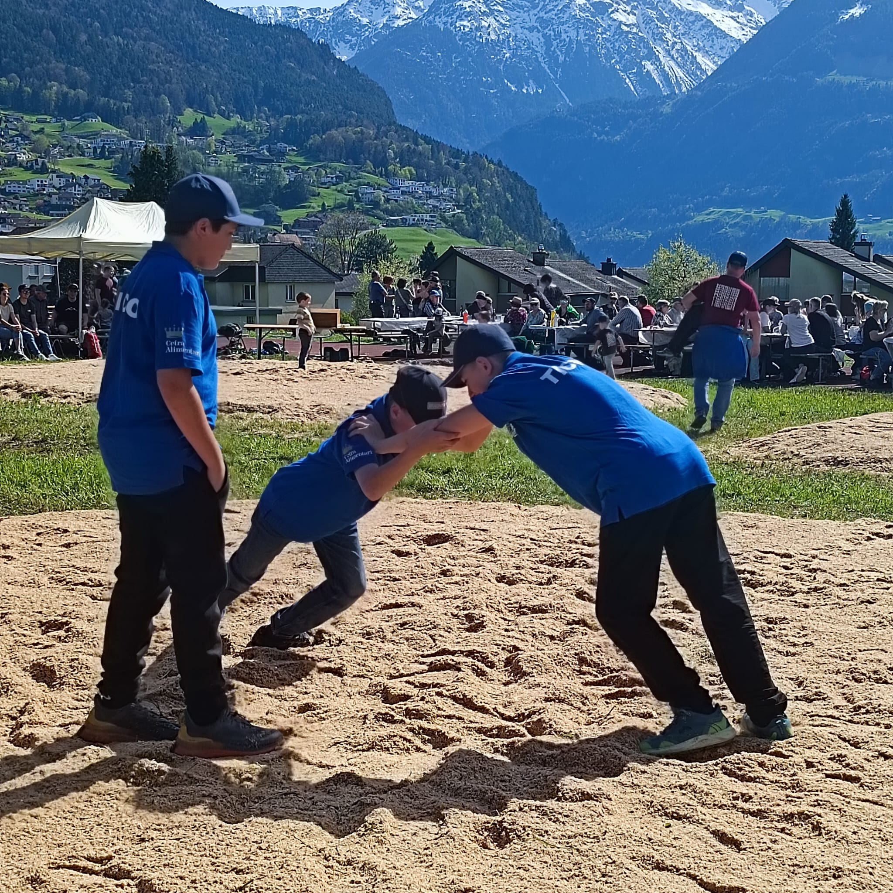